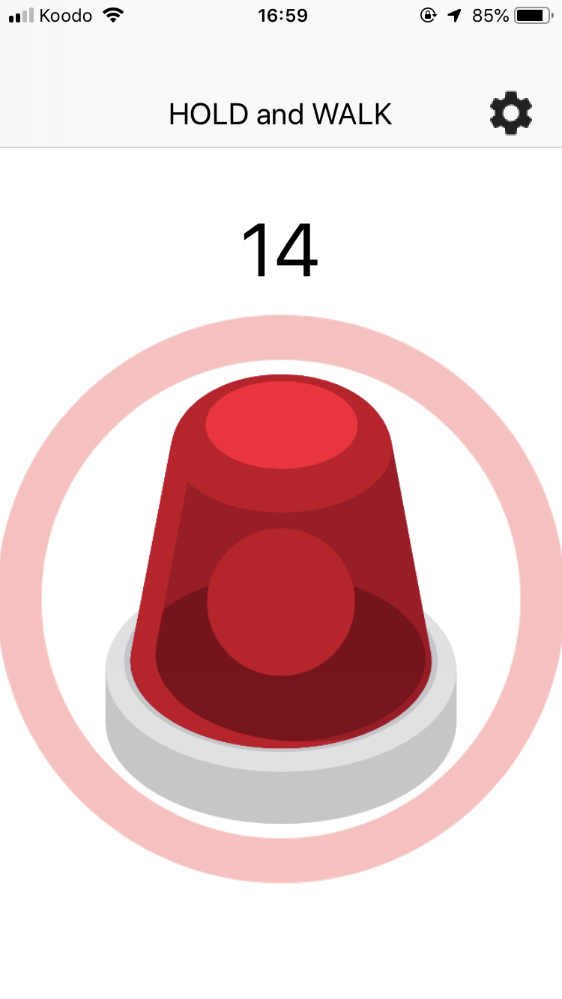
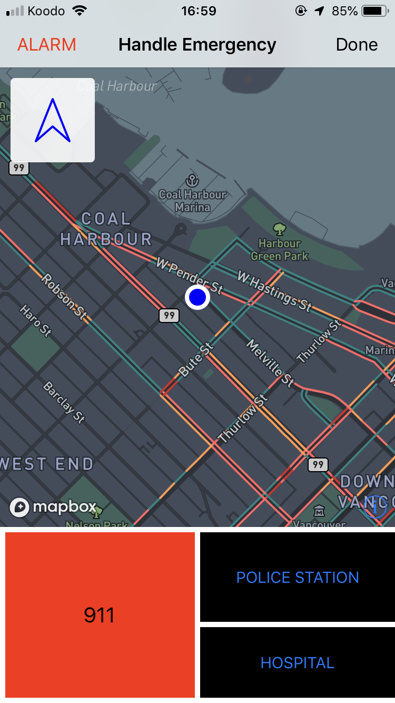
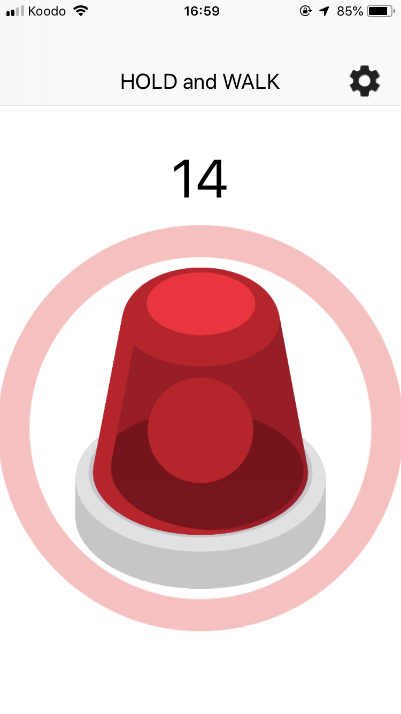
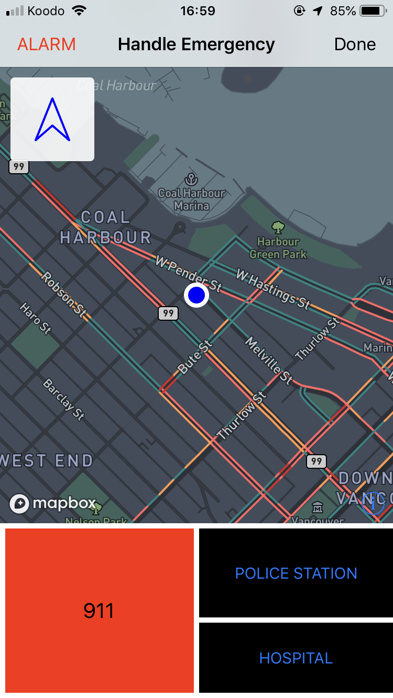
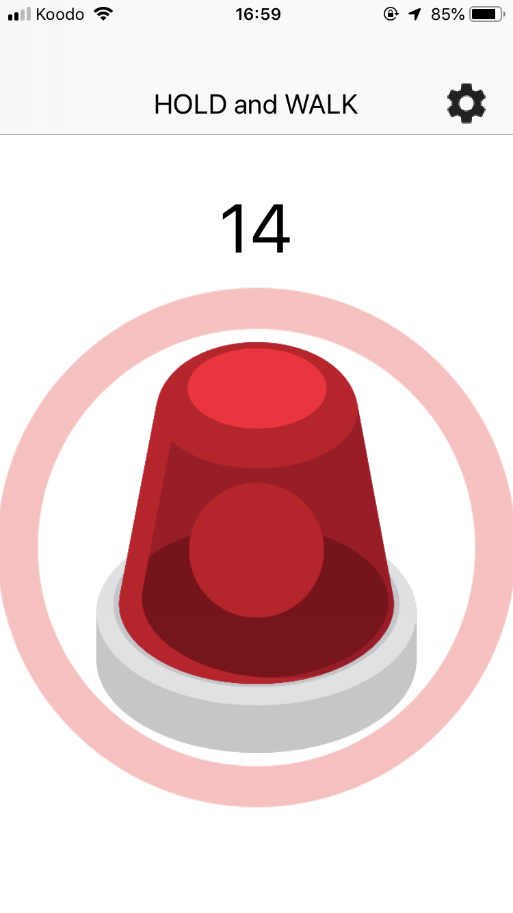
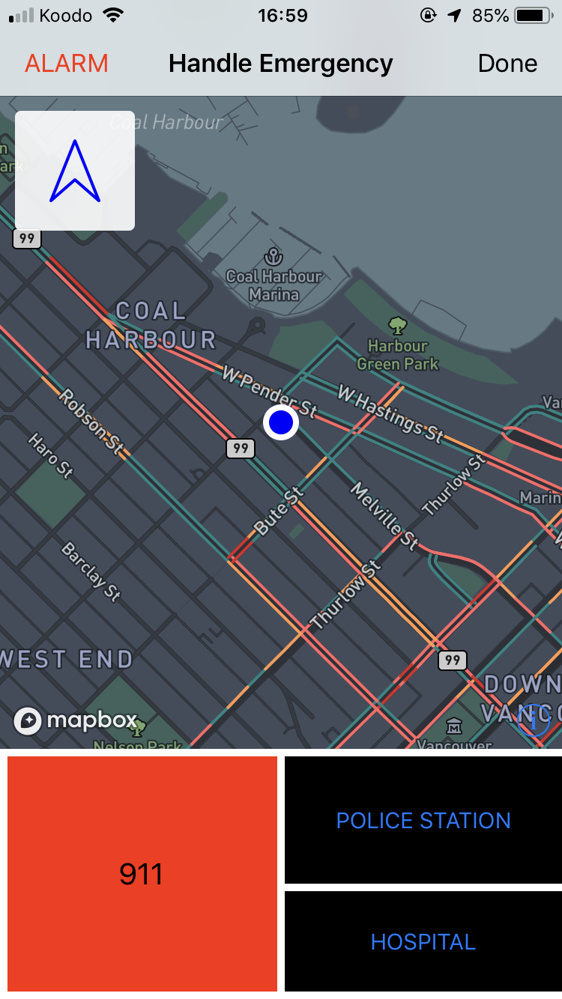

An emergency SOS app built using Swift that launches into emergency mode through a widget. Hold down while safe and release to trigger siren mode, SMS with user location and audio recordings.


Awarded People's Choice Award at Lighthouse Labs Demo Day

Host View
The host view uses vertical paging to allow users to skip to the next video with a simple 'swipe up' gesture. Conversely, with a 'swipe down' gesture, the user is able to go back to the previous video.
The videos displayed are a compilation of all videos that had been uploaded over the course of building this app.
Any user of the app can upload videos to the live feed.
The live feed displays videos in order of most recent to least recent.
Record View
The user is able to:
(1) select a video from their video library and/or
(2) record a video from within the app
Features include: trimming, adding filters, and selecting a 'cover' for the video.
Once the user hits the 'upload' button, the videos are sent in URL format to the Firebase database and storage.
If we then head back to the host view and hit refresh, we can see that a video we just uploaded is now available for all users of the app to see.